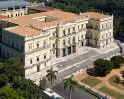
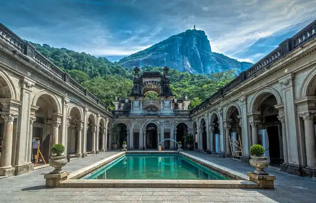
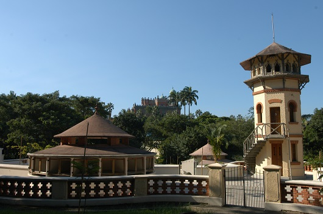
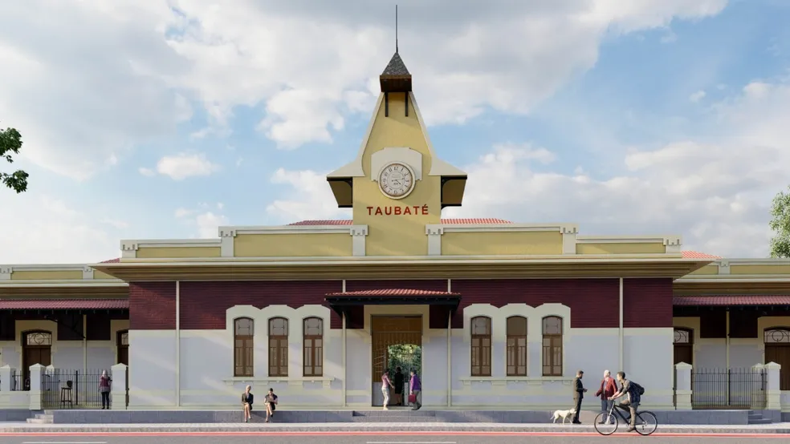
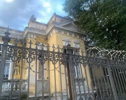
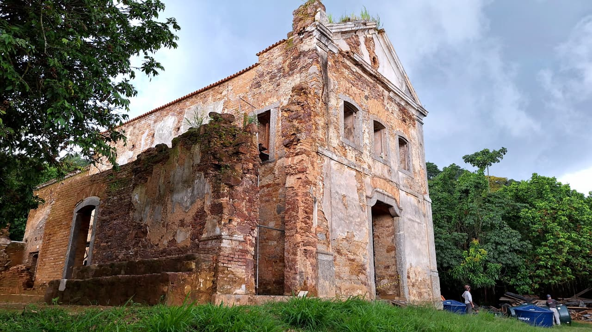
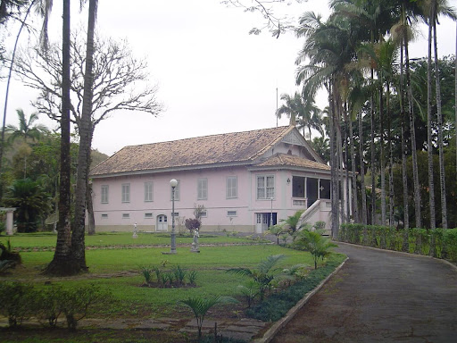
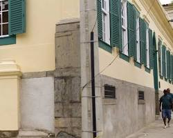
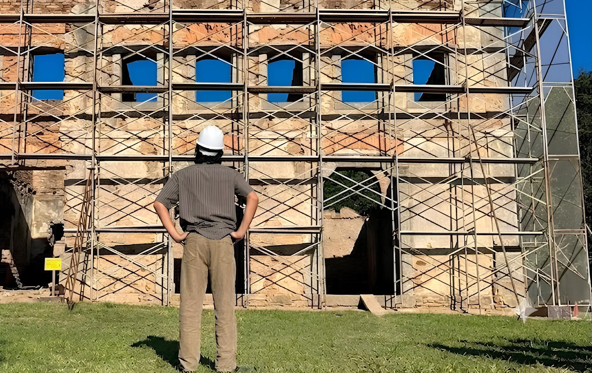

Arquitetura e Restauro
Restauração e Fabricação de Esquadrias em Madeira
A Lignum atua na interface entre o projeto de restauro, a engenharia e a execução em madeira de alta complexidade. Nossa expertise une o restauro e a reconstituição fiel de esquadrias monumentais, caixilharias e elementos ornamentais históricos, à execução de projetos contemporâneos de alto padrão — incluindo a fabricação técnica de coberturas, telhados, pergolados, decks, e a instalação especializada de forros e assoalhos. Alinhando precisão técnica e rigor artesanal, desenvolvemos também mobiliário sob medida e peças de alta movelaria, garantindo a perenidade estrutural e a excelência estética da matéria-prima.

Reconstituição integral de esquadrias monumentais e caixilharia histórica.

Fabricação e ajuste técnico de janelas oitocentistas de grande porte.

Marcenaria técnica externa, incluindo decks, bancos e esquadrias.

Restauro e fabricação de esquadrias ferroviárias históricas.

Desenvolvimento de esquadrias de luxo com vedação termoacústica.

Intervenção estrutural e consolidação de elements em alvenaria histórica.

Fabricação de Lambrequins ornamentais e detalhamento colonial.

Esquadrias históricas e mobiliário fixo personalizado de alto padrão.

Engenharia de restauro, gestão de canteiros e fiscalização técnica especializada.